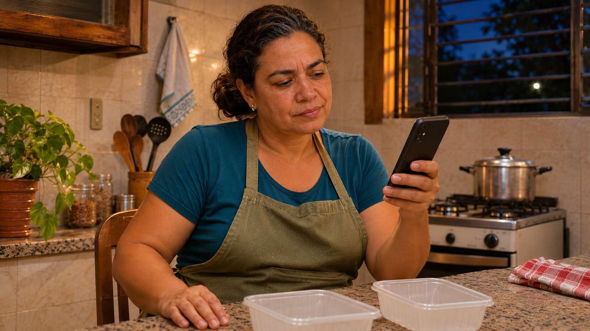

O episódio da contagem
1. Confirma o pedido na conversa
Uma cliente pede duas marmitas para o dia seguinte. Maria confirma a quantidade pelo WhatsApp e volta a arrumar a cozinha.
2. Soma os pedidos no fim do dia
Maria revisa as conversas mais recentes primeiro. Ao terminar, fica em dúvida se incluiu um pedido de que se lembrava.
3. Confere de novo e ajusta o preparo
Ela volta à conversa e encontra as duas marmitas que ficaram fora da primeira soma. Ainda dá tempo de ajustar a quantidade antes de cozinhar.

O que o episódio mostra
A cena ilustra o esforço de rever as conversas. A frequência e o impacto em negócios reais seguem em aberto.